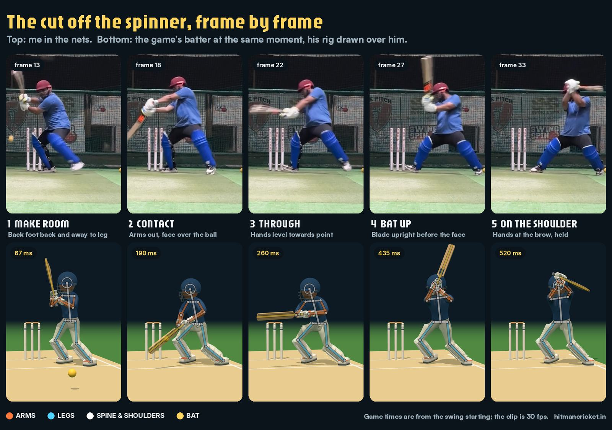

Cut off the spinner

Brief
“A ball pitching outside off turns in, so the batsman makes room by moving towards leg, then cuts. It’s played on the back foot. Analyse carefully the feet, the follow-through, the hands, and how the bat lands on the opposite shoulder.”
Round 2
“The bat will not go over the head, it will land on the opposite shoulder. The hands going over the head look forceful. Like the hook, hold a little when the bat lands on the shoulder.”
The rules
“It should not be out every time. It could be a dot off the inside edge, or a single if it’s close to good timing. … Even with poor contact it should go towards off.”
Bat over the head→Hands at the brow, bat onto the shoulder→Held, like the hook
- Room made, not givenBack and away to leg, front foot drawn back, stance opened wide.
- No forced finishHands stop at the peak of the helmet; the bat tips past the ear onto the shoulder and holds.
- Fair at the edgesA ball going on down leg gets a cramped cut: squeezed to point or off the pad, out only when misread and mistimed.